Cover Story
4 Da Kulture’s 2026–27 NBA Season Preview
The moves, pressure, new eras and teams trying to hold on. The season-preview magazine is now a growing digital issue.
Ant erupts. Cleveland survives. Houston rises. Boston makes a statement. Golden State finds a new spark.
READ THE COMPLETE 4DK NIGHTCAP →4 DA KULTURE • CURRENT DESK • OCTOBER 26, 2026
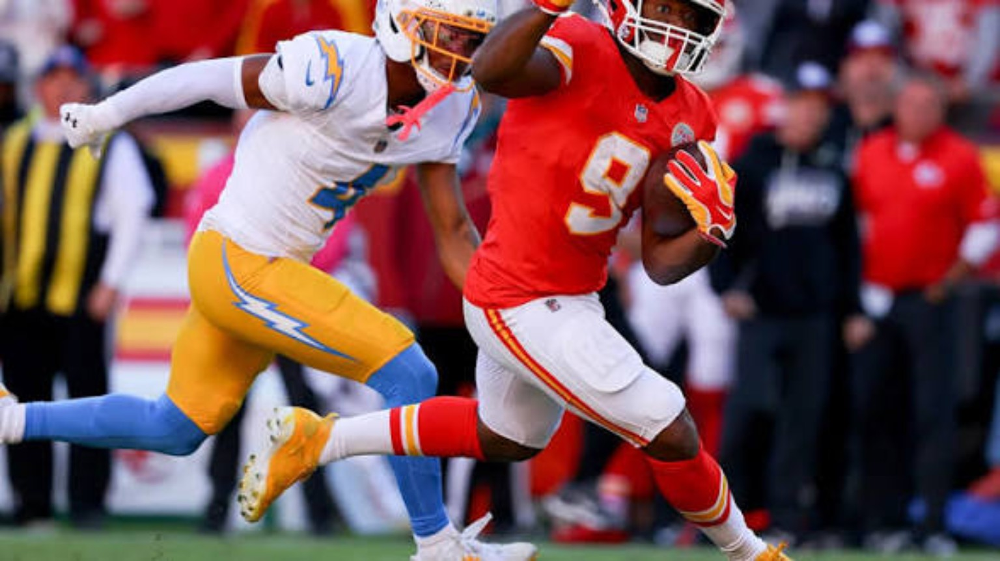
Walker returns to Seattle. The Week 7 film room is open.

Philadelphia rallies against Cleveland. OKC shows its defense and depth against Denver.
Our Episode 7 breakdown.
Explore the Raekwon album file and our growing classics archive.
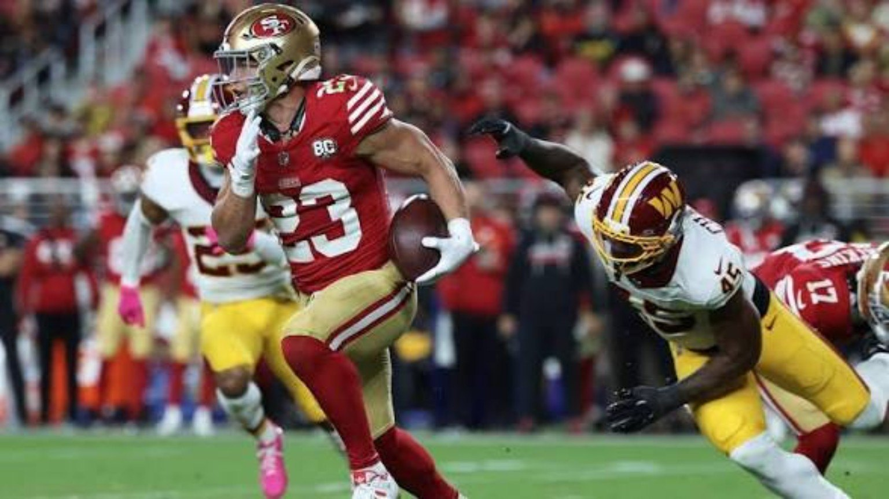
49ers 23, Commanders 17. San Francisco survives Jayden Daniels' comeback, McCaffrey delivers, Mustapha saves the night—and the Evans Achilles injury raises a major question.
READ THE FULL MNF BREAKDOWN →Previous coverage: Week 6 Sunday recap →
The Knicks defend a championship. LeBron begins a new chapter in Philly. Giannis arrives in Miami. Wemby and SGA battle for the West. Luka takes the Lakers' keys. Five stories that define the NBA's new era.
READ ALL FIVE HEADLINES →A home for the games, records, stories and conversations that move us. Real analysis. Deep archives. A perspective built for the culture.

Opening-week breakdowns, the biggest performances and the conversations after the final buzzer.
READ THE NIGHTCAP →Week 7 storylines, weekly analysis and the road ahead across the league.
ENTER THE NFL DESK →
Track-by-track deep dives, classic albums and the stories behind their impact.
EXPLORE ALBUM FILES →Television, film, music and the moments that connect everything we cover.
EXPLORE CULTURE →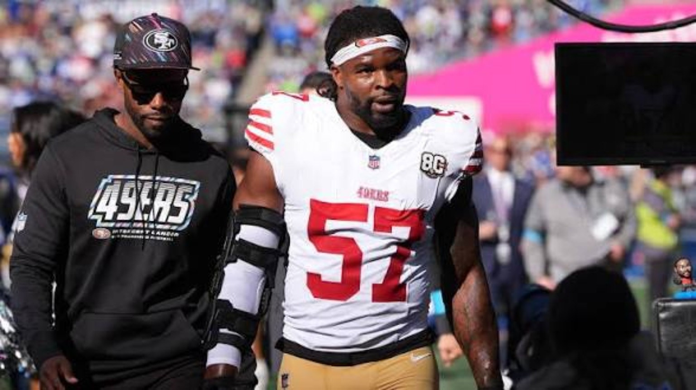
San Francisco is 5–0, but Greenlaw is suspended. Allen comes to Vegas. Hurts is out. Lamar's ankle is still under watch. Five stories that could define the weekend.
READ THE FIVE MAJOR HEADLINES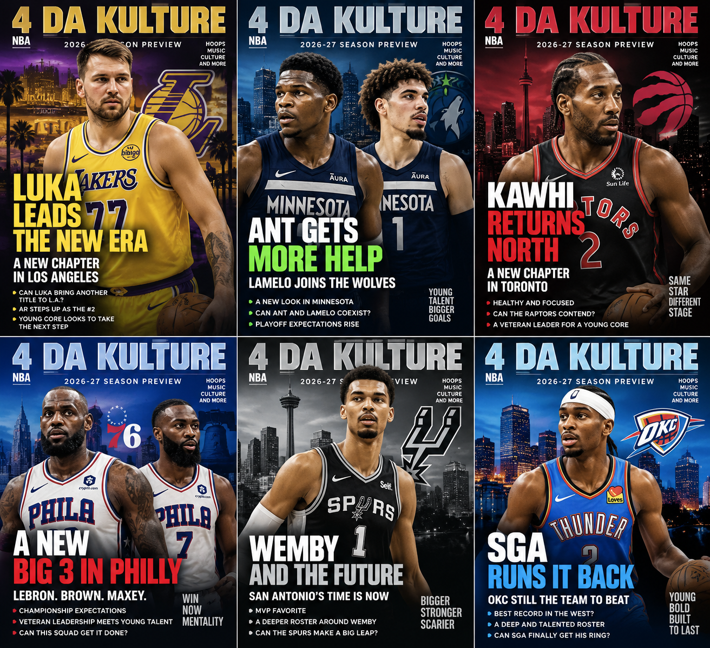
The contenders, the pressure, and the storylines we'll be watching when real basketball begins.
READ THE NBA DESK →
50 Cent, the impact of Get Rich or Die Tryin', and the albums that changed eras.
OPEN THE ALBUM FILES →Fresh coverage up front. Every original story stays in the archive. This row follows our editorial feed as new pieces publish.
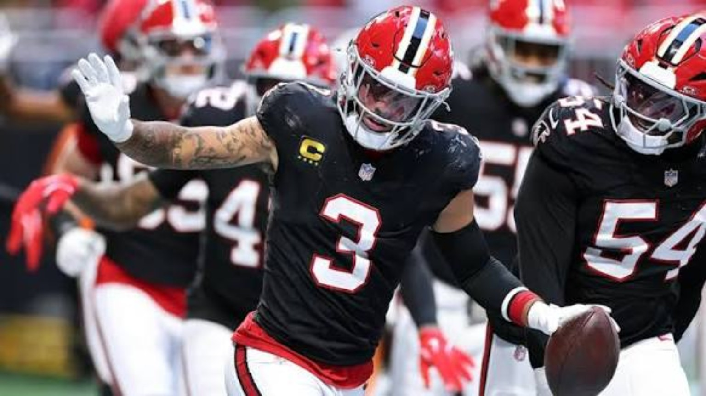
Atlanta ends San Francisco's unbeaten run. Read our Week 7 Sunday analysis.
READ THE RECAP →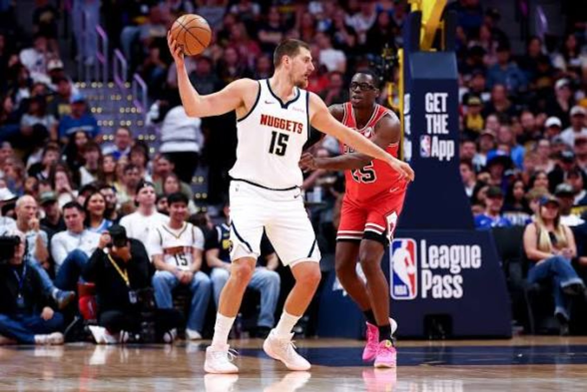
Nightly reaction, the players standing out, and what it means.
READ THE NIGHTCAP →Episode 6 goes deep on identity, consequences, and the music.
READ THE RECAP →
Track-by-track, impact, era, and the legacy of Kanye's second album.
OPEN THE FILE →Kansas City, San Francisco and Minnesota stay unbeaten, Carolina lights up Detroit, Dallas steals one in Houston — plus every game, updated rankings, awards watches, standings and league leaders.
READ THE WEEK 4 UPDATE →The music story, family mystery and Wanda/Leon history all collide.
Read the recap →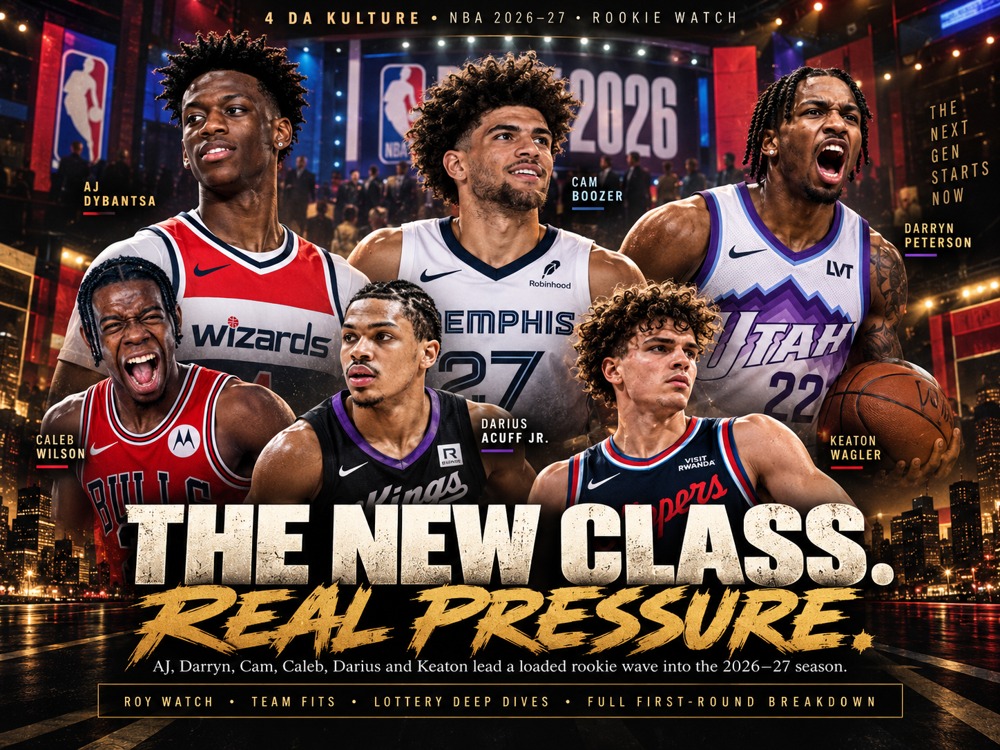
The first-round class gets the full 4DK treatment — team context, role and upside.
Read the feature →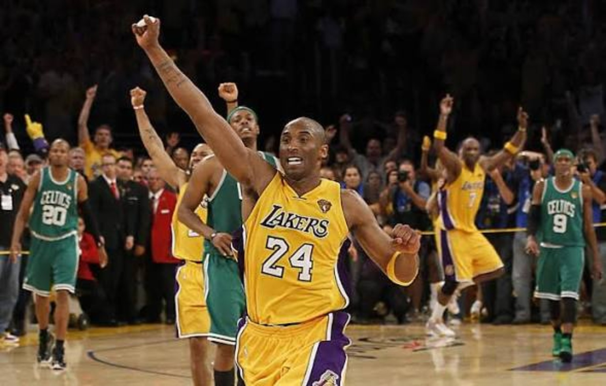
Back-to-back. Revenge. Legacy. The fully formed champion.
Open File 007 →4 DA KULTURE • OCTOBER 12, 2026
Buffalo edges Los Angeles 37–34 in overtime. Our Monday Night Football breakdown is up, with the full Sunday recap preserved. On the hardwood, the NBA preseason Nightcap remains the latest published edition.
The moves, pressure, new eras and teams trying to hold on. The season-preview magazine is now a growing digital issue.
The league enters 2026 with old powers fighting back, loaded contenders going all-in and young quarterbacks waiting on their moment.
Enter 4DK NFL →Five positions. Three choices each. No do-overs. Build your all-time lineup and let 4DK grade the fit.
Play the Challenge →Hip-hop, R&B, regional sound, album debates and the records staying in rotation.
Enter 4DK Music →Explore original 4DK features, rewinds and reviews from the archive.
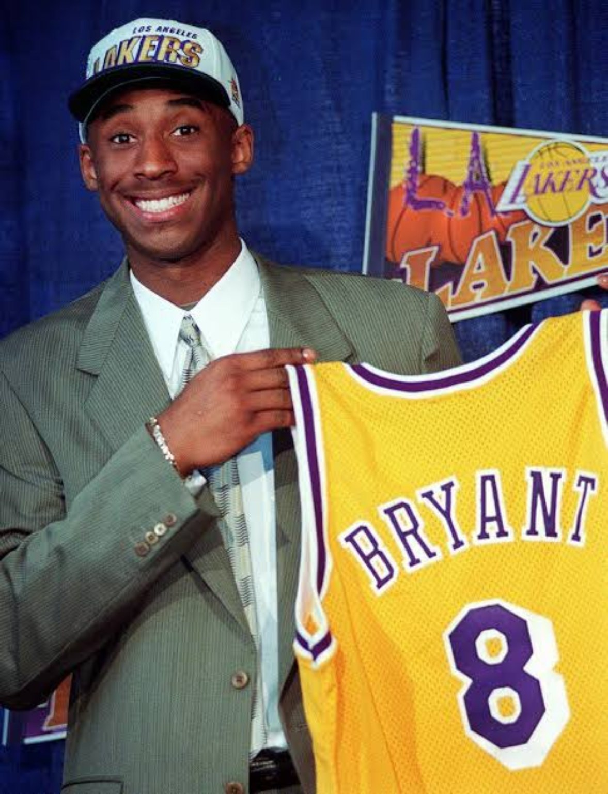
Kobe at 13, a loaded class and the night the league's future shifted.
Open the file →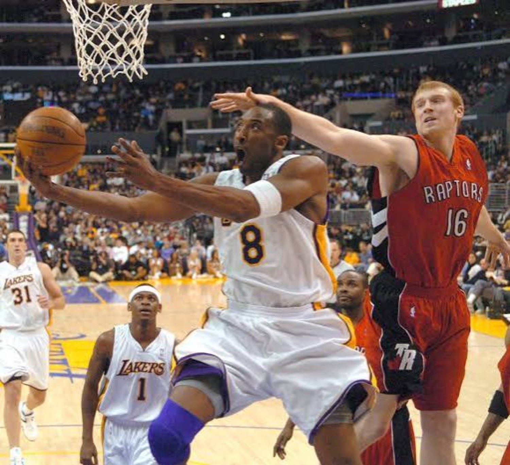
81 points, 35.4 a night and one of the wildest scoring seasons ever.
Read the feature →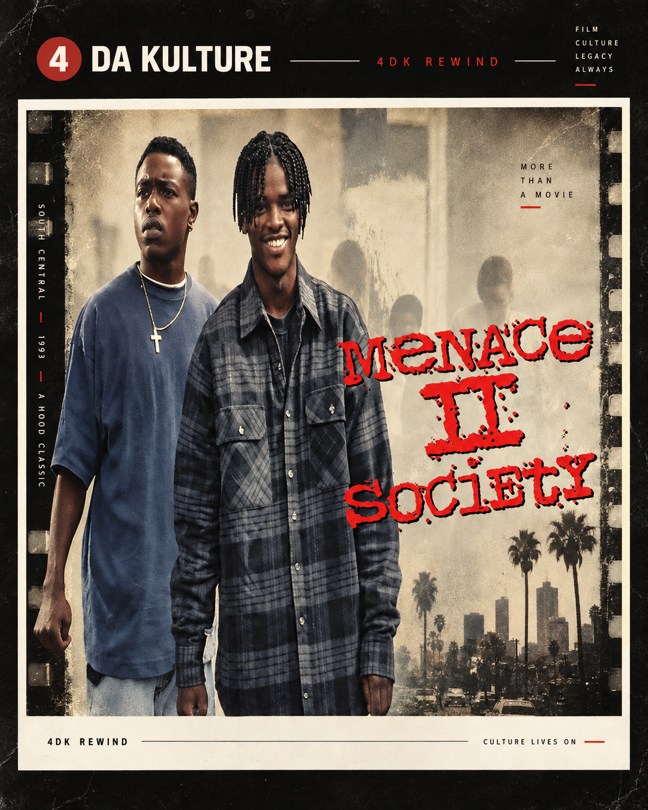
Going back to the films and shows that still carry weight in the culture.
Enter 4DK Rewind →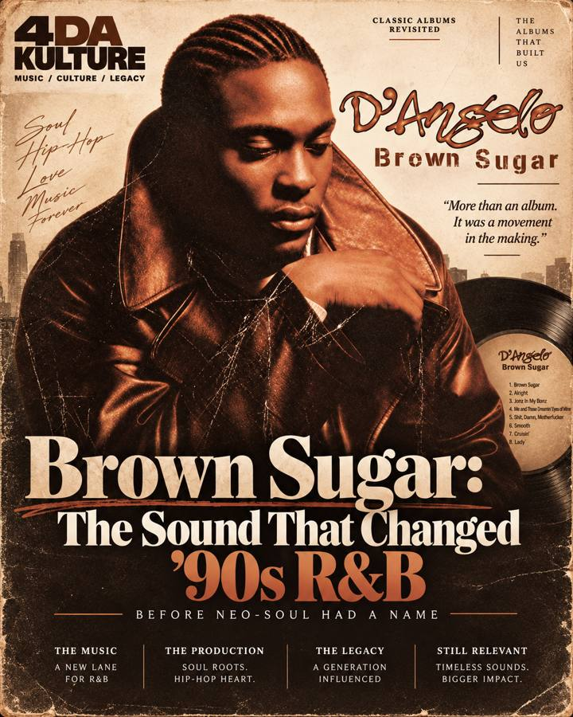
Track by track, no skips and a debut that helped open the door for neo-soul.
Read the review →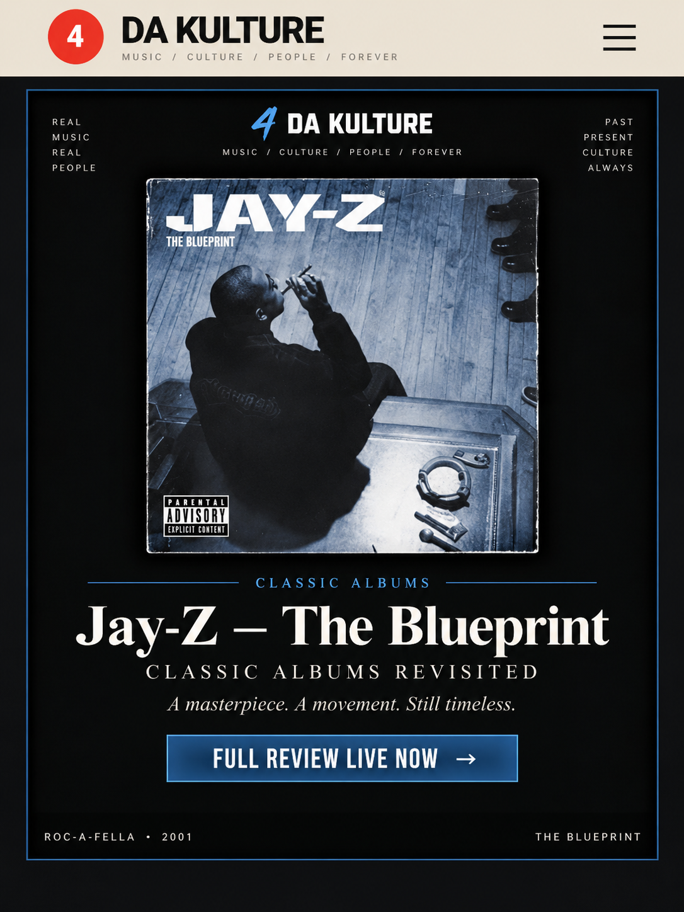
A track-by-track revisit of the album Kcdatruth still has as Jay-Z’s best.
Read Full Review →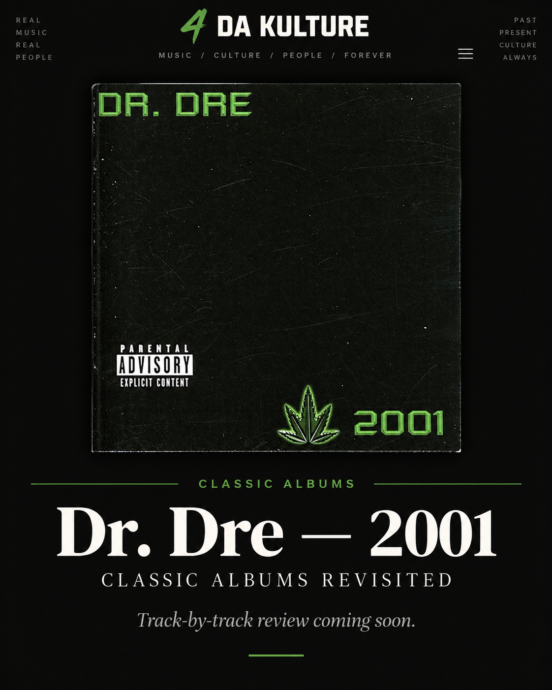
The production, Hittman, the features and the record that reset the West Coast sound.
Read Full Review →Classic albums, old-school hoops, TV, games, style and the moments that built the culture.
Enter Throwback →4 Da Kulture ranks the Top 26 East Coast rappers of 2000–2026. Nas takes the crown — but the #2 spot is where the debate starts.
 NBA LEGACYFROM AFTERTHOUGHT
NBA LEGACYFROM AFTERTHOUGHTFrom UCLA afterthought to MVP, triple-double king and one of the defining point guards of his era.
Read → OFFSEASON WINNERSAME FREAK.
OFFSEASON WINNERSAME FREAK.Giannis leaves Milwaukee for Miami — and steps into a situation built to put him back in the middle of the MVP conversation.
Read → FRANCHISE RETROSPECTIVETHE PARTY'S
FRANCHISE RETROSPECTIVETHE PARTY'SHow a championship window slowly closed — from the 2021 title to a 32–50 season and the end of an era.
Read →The front page can move without burying the work. These deeper reads stay one click away and rotate back into the spotlight.
Wayne, Kendrick, Nas, Jay, Drake and the full argument from top to bottom.
Revisit the ranking → FROM THE MIDWESTCommon, Kanye, Eminem, Gibbs, Lupe and a region with a deeper bench than it gets credit for.
Read the list → 2026 NFL PREVIEWMahomes, Allen, Burrow, Lamar and a conference with almost no room for mistakes.
Read AFC preview → 2026 NFL PREVIEWLoaded contenders, big expectations and a conference where somebody good is getting left out.
Read NFC preview →Recurring series give the site a rhythm — new drops up front, permanent hubs underneath.